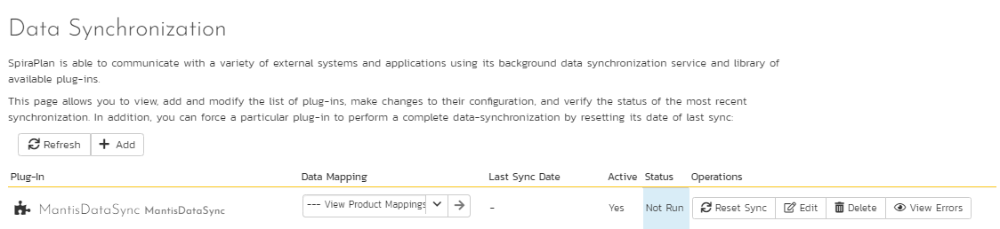
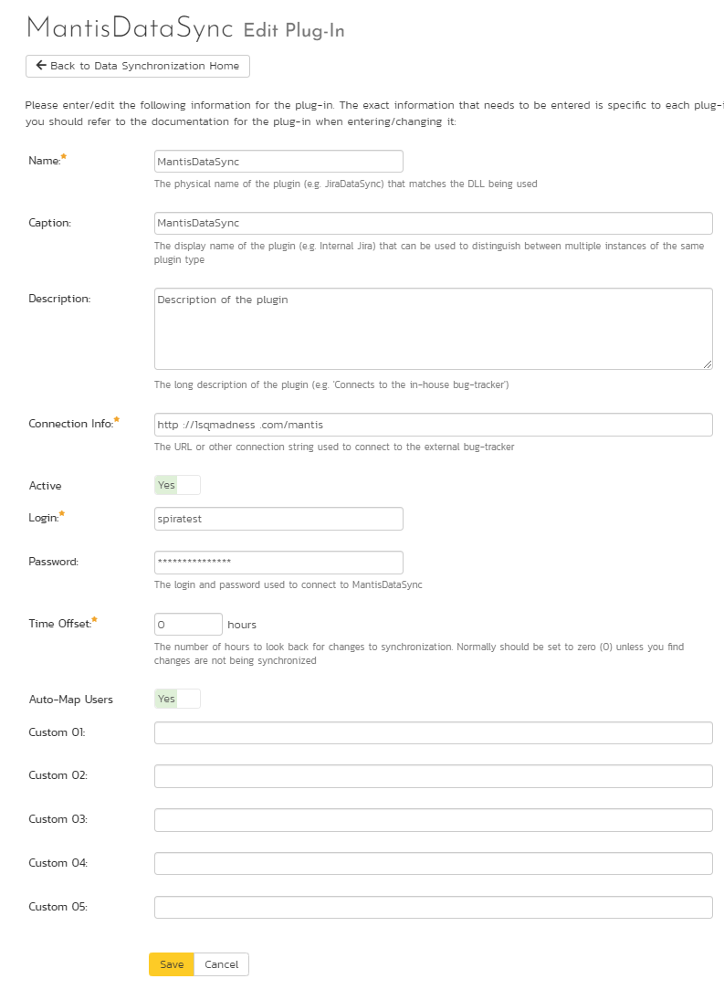
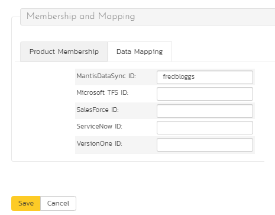
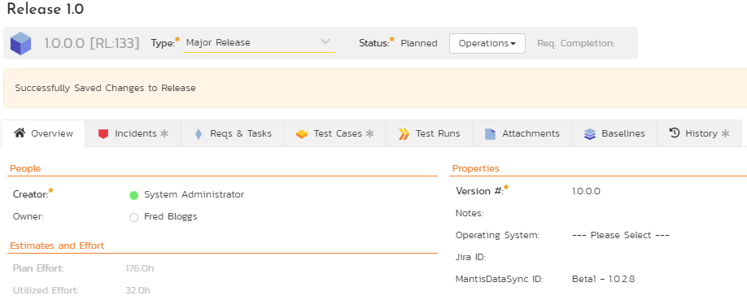
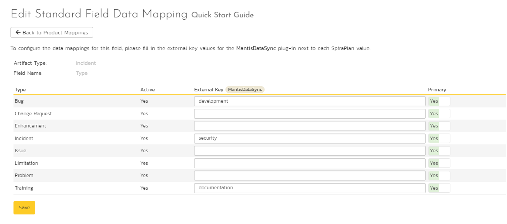
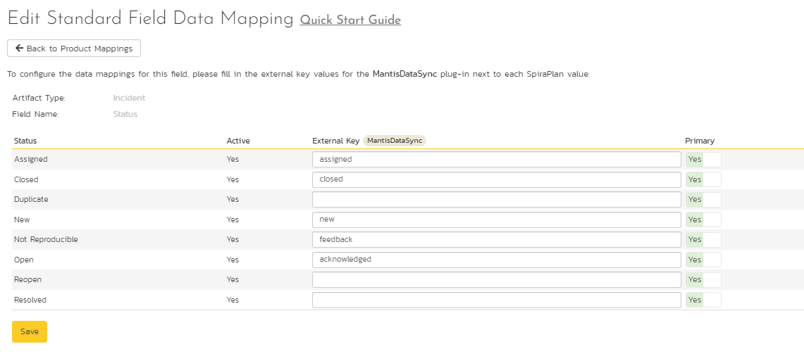
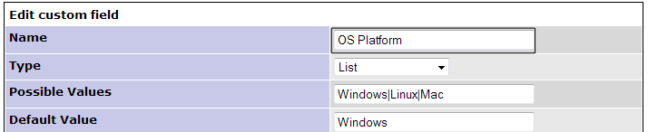

Using SpiraTeam with Mantis
This section outlines how to use SpiraTest, SpiraPlan or SpiraTeam (hereafter referred to as SpiraTeam) in conjunction with the Mantis issue tracking system. The built-in integration service allows the quality assurance team to manage their requirements and test cases in SpiraTeam, execute test runs in SpiraTest, and then have the new incidents generated during the run be automatically loaded into Mantis.
Once the incidents are synchronized into Mantis, the development team can then manage the issues in Mantis and have the status changes and additional notes entered in Mantis be reflected back in SpiraTeam. In addition, any new issues logged into mantis will get imported into SpiraTeam so that they can be linked to test cases and requirements.
STOP! Please make sure you have first read the Instructions in Setup before proceeding!
Configuring the Plug-In
The next step is to configure the plug-in within SpiraTeam so that the system knows how to access the Mantis server. To start the configuration, open up SpiraTeam in a web browser, log in using a valid account that has System-Administration level privileges and click on the System > Data Synchronization administration option from the left-hand navigation:

This screen lists all the plug-ins already configured in the system. Depending on whether you chose the option to include sample data in your installation or not, you will see either an empty screen or a list of sample data-synchronization plug-ins.
If you already see an entry for MantisDataSync you should click on its "Edit" link. If you don't see such an entry in the list, please click on the [Add] button instead. In either case you will be taken to the following screen where you can enter or modify the Mantis Data-Synchronization plug-in:

You need to fill out the following fields for the Mantis Plug-in to operate correctly:
-
Name -- this needs to be set to MantisDataSync. This needs to match the name of the plug-in DLL assembly that was copied into the C:\Program Files\SpiraTeam\Bin folder (minus the .dll file extension). If you renamed the MantisDataSync.dll file for any reason, then you need to change the name here to match.
-
Description -- this should be set to a description of the plug-in. This is an optional field that is used for documentation purposes and is not actually used by the system.
-
Connection Info -- this should the URL that you use to access your instance of Mantis (e.g. https://www.mycompany.com/bugs)
-
Login -- this should be set to a valid login to the Mantis installation. The login needs to have permissions to create and view issues and versions within Mantis for the projects that you will be syncing to SpiraTeam.
-
Password -- this should be set to the password of the login specified above.
-
Time Offset -- The time offset between the two servers, if the Mantis server is on a different server than SpiraTeam. For example, if the Mantis server's clock is set to Pacific Standard Time (PST) and the SpiraTeam server is set to Eastern Standard Time (EST), the Mantis server would be three hours behind SpiraTeam, so you would need to put -3 into this field.
-
Auto-Map Users -- If enabled and a mapped user is not found between the two systems, a search will be made comparing logins between SpiraTeam and Mantis for matching UserIDs. If one is found, than that user will be used. If not enabled and a match is not found, then the UserID used will be the connecting user for the Data Sync. (The SpiraTeam User for issues coming into SpiraTeam, and the Mantis Login for issues imported into Mantis.)
-
Custom 01 -- This field specifies whether or not a Resolution item in SpiraTeam, or a Note item in Mantis will be created when an issue is created in either system for a new issue. Valid values are True or False. Default (or blank) is True.
-
Custom 02 -- This field indicates whether or not to convert Carriage Returns and spaces in Mantis issues when synchronizing them into SpiraTeam. If enabled, then carriage returns will be converted to HTML breaks, and multiple spaces will be converted to non-breaking spaces to preserve formatting when importing into SpiraTeam. If disabled, then carriage returns and spaces will be left as-is. Valid values are True or False. Default (or blank) is True.
-
Custom 03 -- This field is only used when 'Auto-Map Users' is enabled and for Incidents synchronized from SpiraTeam into Mantis. If enabled, and the Auto-Map User did not find a user with a matching Login ID, then the Login ID will be set to the User in Spira, even if that user may not exist in Mantis. Depending on Mantis configuration, the user may be accepted, or it may default back to the Mantis UserID that the Data Sync runs under. Valid values are True or False. Default (or blank) is False.
-
Custom 04 -- If enabled, this option specifies whether or not to append the "Additional Information" and "Steps To Reproduce" fields to the end of the Description field in Spira. During transfer of new issues from Mantis to SpiraTeam, the Description field in SpiraTeam will consist of the Description field in Mantis appended by the Additional Information field in Mantis, and finally the Steps To Reproduce field in Mantis. If this option is disabled, only the Description will be transferred over. Valid values are True or False. Default (or blank) is False.
-
Custom 05 -- This is not currently used by the MantisDataSync, and can be left blank.
Configuring the Data Mapping
Next, you need to configure the data mapping between SpiraTeam and Mantis. This allows the various projects, users, releases, incident types, statuses, priorities and custom property values used in the two applications to be related to each other. This is important, as without a correct mapping, there is no way for the integration service to know that an "Enhancement" in SpiraTeam is the same as a "Feature" in Mantis (for example).
The following mapping information needs to be setup in SpiraTeam:
The linking between the project in SpiraTeam and the project in Mantis.
The linking of users between the two systems.
The linking of releases between the two systems.
The linking of standard SpiraTeam fields to Mantis fields.
The linking of custom SpiraTeam fields to Mantis custom fields.
Each of these is explained in turn below:
Configuring the Project Mapping
While working in the project you want to map, from the data synchronization administration page you need to click on the "View Project Mappings" hyperlink next to the Mantis plug-in name. This will take you to the data-mapping overview page:
If the project name does not match the name of the project you want to configure the data-mapping for, click on the "(Change Project)" hyperlink to change the current project.
To enable this project for data-synchronization with Mantis, you need to enter:
External Key -- This should be set to the ID of the project in Mantis. To get the ID of the Project in Mantis, log in as an administrator and go to Manage -> Manage Projects:
Then hover the mouse over the project name. The project ID will be displayed in the URL line as project_id=X where X is the numeric ID of the project.
Active Flag -- Set this to 'Yes' so that SpiraTeam knows that you want to synchronize data for this project. Once the project has been completed, setting the value to "No" will stop data synchronization, reducing network utilization.
Click [Update] to confirm these settings. Once you have enabled the project for data-synchronization, you can now enter the other data mapping values outlined below.
Note: Once you have successfully configured the project, when creating a new project, you should choose the option to "Create Project from Existing Project" rather than "Use Default Template" so that all the project mappings get copied across to the new project, if you are going to want to Sync the new project up to Mantis.
Configuring the User Mapping
To configure the mapping of users in the two systems, you need to go to Administration > Users > View Edit Users, which will bring up the list of users in the system. Then click on the "Edit" button for a particular user that will be editing issues in Mantis:

You will notice that below the Active flag for the user is a list of all the configured data-synchronization plug-ins. In the text box next to the MantisDataSync ID you need to enter the Login ID of this user in Mantis. If you have the "Automap Users" checkbox enabled in the MantisDataSync plugin, then if no link is created, the system will scan for a matching Login ID from both systems and use a match. (If you then do not have Custom3 set to "False", then for data going into Mantis the User ID will be forced to that of the User ID in SpiraTeam.)
Once you have entered the Mantis Login ID in, click [Update]. You should now repeat for the other users who will be active in both systems.
Configuring the Release Mapping
When the data-synchronization service runs and it comes across a release in SpiraTeam (or a Version in Mantis) that it has not linked before, it will create a corresponding entry in the other system. When starting out a new project, it is recommended that you let the MantisDataSync handle creation of the releases/versions in either system, and then edit the information once the link is made.
In cases where you are syncing up two existing projects in both systems, it is advised that you link any existing releases that exist in both systems manually, and then only create new releases in one system. To link a release in SpiraTeam up to a version in Mantis, please navigate to Planning > Releases and click on the Release/Iteration in question. Make sure you have the 'Overview' tab visible and expand the "Details" section of the release/iteration:

In addition to the standard fields and custom properties configured for Releases, you will see an additional text property called "MantisDataSync ID" that is used to store the mapped external identifier for the equivalent Release in Mantis. The Mantis ID of a version is the string that is in the
The Mantis Release ID can be found by going to Manage -> Manage Projects -> Versions and viewing a release's details:
The Mantis Release ID is the highlighted text field. Copy and paste this into the field in SpiraTeam. Depending on your regional settings in both applications, this field will likely be case-sensitive.
For versions imported into Mantis from SpiraTeam, the Version will have an "(S)" appended to the name, and for versions in SpiraTeam imported from Mantis the version field of the Release will have "(M)" appended to the name.
Configuring the Standard Field Mapping
Now that the projects, user and releases have been mapped correctly, we need to configure the standard incident fields. To do this, go to Administration > System > Data Synchronization and click on the "View Project Mappings" for the MantisDataSync plug-in entry:

From this screen, you need to set up the Priority, Severity, Status, and Type fields:
a) Incident Type
The Incident Type field is optional and can be linked to the Mantis Category selection.
If you do not link values, then all issues being imported into SpiraTeam from Mantis will be set to the Default Type (as specified in the "View/Edit Types" screen), and issues going from SpiraTeam into Mantis will be assigned to the first Category in the list. (Usually Mantis orders them alphabetically, but this may change depending on your installation. If you do not have any Categories set-up, then issues will not transfer over and error messages will be logged.) For existing issues, updates to this field will not be transferred.

The table lists each of the incident types available in SpiraTeam and provides you with the ability to enter the matching Mantis Category for each one. The value to put in External ID is the Category text:
The Mantis Release ID is the highlighted text field. Copy and paste this into the field in SpiraTeam. Depending on your regional settings in both applications, this field will likely be case-sensitive.
You can map multiple SpiraTeam fields to the same Mantis fields (e.g. Bug and Incident in SpiraTeam are both equivalent to category "development" in Mantis). In a situation like this, enter in the Mantis category in both Big and Incident external keys, and decide which one will be primary. For issues coming from Mantis into SpiraTeam, the one marked Primary will be used, and for issues being created in Mantis, the same category will be used to create the issue.
b) Incident Status
The Incident Status is an optional field to be linked to the Mantis field by the same name.
If you do not link values, then defaults will be used. For issues coming from Mantis into SpiraTeam, incidents will be marked as 'New' (as defined by the "View/Edit Status" in Administration), and for issues being transferred to Mantis, the default is 'new'. Note that if an issue has an Owner in SpiraTeam, then the default for the new issue in Mantis is 'assigned'. For existing issues, updates to the field will not be transferred over.

The table lists each of the incident types available in SpiraTeam and provides you with the ability to enter the matching Mantis Category for each one. The values to put in External Key is any one of the Status values in Mantis. By default in Mantis, the available statuses are:
The Mantis values are in the highlighted text field. Type these into the External Key field in SpiraTeam. Depending on your regional settings in both applications, this field will likely be case-sensitive.
You can map multiple SpiraTeam fields to the same Mantis fields, just like the Incident Type above.
c) Incident Priority & Severity
The Incident Priority and Severity are optional fields that are linked to Mantis fields by the same name.
If you do not link values, then defaults will be used. For issues coming from Mantis into SpiraTeam, incidents will leave those fields undefined (unset). For issues coming from SpiraTeam into Mantis, the default priority of 'normal' and severity of 'minor' is used. For existing issues, updates to the field will not be transferred over.
The table lists each of the priorities available in SpiraTeam and provides you with the ability to enter the matching Mantis priority for each one. (The table for Severities has the same functionality.) The values to put in External Key are any one of the Priority (or Severity) values in Mantis. By default in Mantis, the available values are:
The Mantis values are in the highlighted fields above. Type these into the External Key field in SpiraTeam. Depending on your regional settings in both applications, this field will likely be case-sensitive.
You can map multiple SpiraTeam fields to the same Mantis fields, just like described in Incident Type above.
Configuring the Custom Property Mapping
Now that the various SpiraTeam standard fields have been mapped correctly, we need to configure the custom property mappings. At the moment, only custom fields in Mantis can be linked to custom fields in SpiraTeam.
From the View/Edit Project Data Mapping screen, you need to click on the name of the Incident Custom Property that you want to add data-mapping information for. Both field types in SpiraTeam can be linked up to any of the supported field types in Mantis. Linking between the two systems is done in text values only -- that means that if you have a SpiraTeam custom list, then the values that will be put into Mantis will be the strings of the list. The same works for moving fields back from Mantis. Rules for linking different field types up are as follows:
SpiraTeam 'List' to Mantis 'Enum', 'List', or 'Multiselection': For linking these types of fields together, the available values must match. For example, if you have "Windows" as an item in your list in SpiraTeam, then in the associated field in Mantis, "Windows" must be an available item as well. In instances where there is no match, then the default will be used in either system. On a Multiselection-type field, for importing back into SpiraTeam, only the first (top) selected value will be stored.
SpiraTeam 'List' to Mantis 'Numeric', 'Float', 'Date', 'Text', or 'Email': In this case, the text value of the SpiraTeam list will be assigned to the Mantis field, and values must be exact. For example, if you linked a SpiraTeam List to a Mantis Date field, the value for the List must be a valid date, like "1/1/2010". If any value fails the Mantis validation, the value will be ignored and the custom field will be set blank or to default. When transferring a value back from Mantis into SpiraTeam, the text must equal an available item in the custom list, or the field will be left blank.
SpiraTeam 'Text' to Mantis 'Numeric', 'Float', 'Date', 'Text', or 'Email': In this case, text will be copied over as-is. Note that in some special cases, like the number, date, and e-mail fields, Mantis may apply formatting or verification on values transferred over.
SpiraTeam 'Text' to Mantis 'Enum', 'List', or 'Multiselection': When pulling data from Mantis, the SpiraTeam custom field will be translated as the field in Mantis displays. However, when transferring data to Mantis, if the text in the SpiraTeam field does not match an available item in the lists, then Mantis may leave the field blank or set it to the default value.
a) Mapping custom fields
For a SpiraTeam test field, all you need to do is link the custom field to the custom field in Mantis. To do this, click on the name of the custom field under the "Custom Properties" header in the MantisDataSync Project Mappings, and you will see a screen allowing you to enter the External Key:
[insert screenshot of custom map text prop screen with mapping for below]
In the External Key field, put the name of your custom field in Mantis:

Once you have updated the various mapping sections, you are now ready to use the service.
Using SpiraTeam with Mantis
Now that the integration service has been configured and the service started, initially any incidents created in SpiraTeam for the specified projects will be imported into Mantis and any existing issues in Mantis will get loaded into SpiraTeam. After the first sync, we recommend opening the Windows Event Viewer and viewing the Application Log. Any errors (unable to connect messages, invalid required field mappings) and warnings (incomplete field mappings) will be displayed. If on Server 2008/Vista or later, you can filter by the Application name "MantisDataSync". If you see any error messages (or warning messages that you want to correct before continuing) at this point, we recommend immediately stopping the SpiraTeam service and checking the various mapping entries. If you cannot see any issues with the mapping information, we recommend sending a copy of the event log message(s) to Inflectra customer services (support@inflectra.com) who will help you troubleshoot the problem.
To use SpiraTeam with Mantis on an ongoing basis, we recommend the following general processes be followed:
When running tests in SpiraTest or SpiraTeam, defects found should be logged through the Test Execution Wizard as normal.
Developers using Mantis can log new defects into either SpiraTeam or Mantis. In either case they will get loaded into the other system.
Once created in one of the systems and successfully replicated to the other system, the incident should not be modified again inside SpiraTeam. Since Mantis is considered the master system for incidents/issues, all data changes to the issue should be made inside Mantis. To enforce this, you should modify the workflows set up in SpiraTeam so that the various fields are marked as inactive for all the incident statuses other than the "New" status. This will allow someone to submit an incident in SpiraTeam, but will prevent them from making changes in conflict with Mantis after that point.
As the issue progresses in Mantis, changes to the type of issue, changes to its status, priority, description and resolution will be updated automatically in SpiraTeam. In essence, SpiraTeam acts as a read-only viewer of these incidents.
You are now able to perform test coverage and incident reporting inside SpiraTeam using the test cases managed by SpiraTeam and the incidents managed on behalf of SpiraTeam inside Mantis.